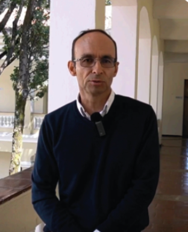

Profesores Participantes

Nilson Valencia
Licenciado en Diseño Tecnológico.
Fabio Gonzales
Ingeniero mecanico Universidad Nacional.
Leidy Carolina Arias
Licenciada en Diseño Tecnológico.
Alejandro Torres Gutierrez
Licenciado en Docencia del Diseño.
Carlos Alberto Merchan
Licenciado en Diseño Tecnológico.
Carlos Arturo Marin
Ingeniero de Sistemas
Jeisson Fabian Martín
Licenciatura en Ciencias.
Jesus David Pardo
Sociólogo.
Johan Alexander Rincon
Ingeniero Mecánico.

Juan Carlos Estupiñan
Diseñador Industrial y Ergónomo.
Nelson Otalora Porras
Licenciado en docencia del diseño y magister.
Yovanni Aldana Useche
Licenciado en Diseño Tecnológico.
Karen Melissa Muñoz
Licenciada en Idiomas Extranjeros.